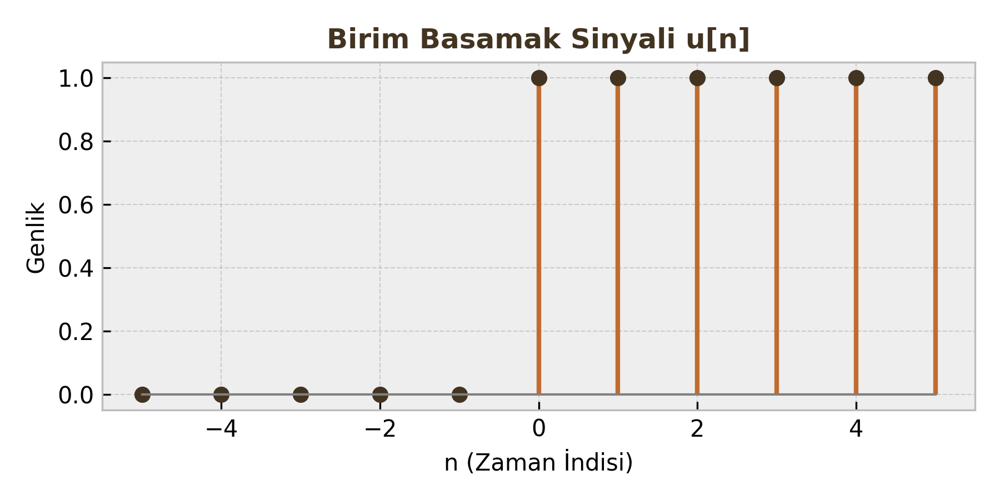
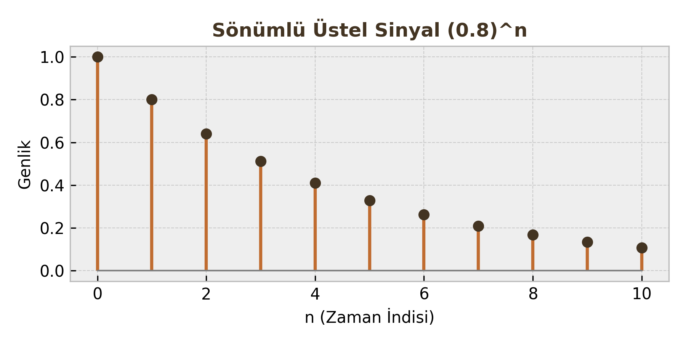

Sayısal İşaret İşleme: Ayrık Zamanlı İşaretler ve Temel Özellikler
Bu ders notu, Sayısal İşaret İşleme (DSP) dersinin giriş konusu olan Ayrık Zamanlı İşaretler (Discrete-Time Signals) kavramını, matematiksel modellerini, sınıflandırmasını ve temel işlemlerini kapsamaktadır.
1. Ayrık Zamanlı İşaretler Nedir?
Ayrık zamanlı bir işaret, bağımsız değişkenin (genellikle zaman) sadece tam sayı değerleri aldığı bir fonksiyondur. Sürekli zamanlı (analog) bir sinyalin, belirli aralıklarla örneklenmesiyle elde edilir.
Matematiksel Gösterim:
$$x(n) = {..., x(-1), x(0), x(1), ...}$$
Burada $n$ bir tam sayıdır ($n \in \mathbb{Z}$) ve "örnek indisi" olarak adlandırılır. $x(n)$ ise o andaki genlik değeridir.
Öğrenci Notu
$x(n)$ gösterimindeki parantez bazen $x[n]$ olarak da kullanılır. İkisi de aynı anlama gelir; ancak sürekli zamandaki $x(t)$'den ayırt etmek için köşeli parantez literatürde daha yaygındır.
2. Temel Sinyaller (Elementary Signals)
DSP analizinde sistemleri test etmek ve karmaşık sinyalleri modellemek için kullanılan yapı taşlarıdır.
A. Birim Dürtü (Unit Impulse - δ[n])
Sadece $n=0$ anında 1 değerini alan işaretin tanımı:
$$ \delta[n] = \begin{cases} 1, & n = 0 \\ 0, & n \neq 0 \end{cases} $$

Önemli Özellikler:
-
Örnekleme Özelliği (Sampling Property): Bir sinyali dürtü ile çarparsanız, sadece dürtünün olduğu yerdeki değeri alırsınız.
$$ x(n)\delta(n-k) = x(k)\delta(n-k) $$
-
Eleme Özelliği (Sifting Property): Aşağıdaki eşitlik her zaman sağlanır:
$$ \sum_{n=-\infty}^{\infty} x(n)\delta(n-k) = x(k) $$
B. Birim Basamak (Unit Step - u[n])
Birim basamak işareti şu şekilde tanımlanır:
$$ u[n] = \begin{cases} 1, & n \ge 0 \\ 0, & n < 0 \end{cases} $$

Dürtü ve Basamak İlişkisi:
-
Dürtüden Basamağa: Basamak fonksiyonu, dürtülerin toplamıdır.
$$ u[n] = \sum_{k=-\infty}^{n} \delta(k) $$
-
Basamaktan Dürtüye: Dürtü, basamağın fark (difference) işlemidir.
$$ \delta[n] = u[n] - u[n-1] $$
C. Üstel Sinyaller (Exponential Signals)
1. Reel Üstel İşaretler
Genel form: $x(n) = C \alpha^n$ (Burada $C$ ve $\alpha$ reel sayılardır).
- $|\alpha| > 1$ ise sinyal üstel olarak büyür.
- $|\alpha| < 1$ ise sinyal üstel olarak sönümlenir.
- $\alpha < 0$ ise sinyal işaret değiştirerek (alternating) ilerler.

2. Karmaşık Üstel İşaretler
Genel form:
$$ x(n) = e^{j\omega_0 n} $$
Euler formülü sayesinde bu işaret sinüzoidal bileşenlere ayrılabilir:
$$ e^{j\omega_0 n} = \cos(\omega_0 n) + j\sin(\omega_0 n) $$
Burada $\omega_0$, radyan/örnek cinsinden açısal frekanstır.
3. Sinyal Özellikleri
Sinyalleri analiz edebilmek için onları belirli özelliklerine göre sınıflandırmamız gerekir.
A. Periyodiklik (Periodicity)
Sürekli zamanın aksine, ayrık zamanda her $\sin(\omega_0 n)$ veya $e^{j\omega_0 n}$ periyodik değildir.
Bir $x(n)$ işaretinin periyodik olması için şu şart sağlanmalıdır:
$$ x(n) = x(n+N) $$
Burada $N$, periyodu gösteren pozitif bir tam sayı olmalıdır.
Periyodiklik Şartı:
Açısal frekans $\omega_0$ şu şartı sağlamalıdır:
$$ \frac{\omega_0}{2\pi} = \frac{m}{N} \quad (\text{Rasyonel Bir Sayı}) $$
- Eğer $\frac{\omega_0}{2\pi}$ rasyonel değilse, sinyal periyodik değildir.
- Temel Periyot ($N$): Bu oranı sağlayan en küçük $N$ tam sayısıdır.
Kritik Sınav Bilgisi
$\cos(3n)$ periyodik değildir çünkü $3/2\pi$ rasyonel değildir ($\pi$ irrasyoneldir). Ancak $\cos(0.2\pi n)$ periyodiktir.
B. Simetri: Çift ve Tek İşaretler
Herhangi bir sinyal, çift (even) ve tek (odd) bileşenlerin toplamı olarak ifade edilebilir.
-
Çift Sinyal (Even): Y eksenine göre simetriktir.
$$ x(-n) = x(n) $$
-
Tek Sinyal (Odd): Orijine göre simetriktir.
$$ x(-n) = -x(n) $$
Bileşenlerine Ayırma Formülleri:
| Bileşen | Formül |
|---|---|
| Çift Kısım ($x_e[n]$) | $\frac{1}{2} [x(n) + x(-n)]$ |
| Tek Kısım ($x_o[n]$) | $\frac{1}{2} [x(n) - x(-n)]$ |
C. Enerji ve Güç Sinyalleri
Sinyallerin "büyüklüğünü" ölçmek için enerji veya güç kavramları kullanılır.
1. Sinyal Enerjisi ($E$):
$$ E = \sum_{n=-\infty}^{\infty} |x(n)|^2 $$
2. Sinyal Gücü ($P$):
$$ P = \lim_{N \to \infty} \frac{1}{2N+1} \sum_{n=-N}^{N} |x(n)|^2 $$
Karşılaştırma Tablosu:
| Özellik | Enerji Sinyali | Güç Sinyali |
|---|---|---|
| Tanım | Enerjisi sonlu ($0 < E < \infty$), Gücü sıfır olan sinyaller. | Gücü sonlu ($0 < P < \infty$), Enerjisi sonsuz olan sinyaller. |
| Örnek | Sönümlü üstel, sonlu süreli kare dalga. (Genellikle periyodik olmayan, sönen sinyaller) | Sinüs, Kosinüs, Birim Basamak. (Genellikle periyodik ve devamlı sinyaller) |
| Enerji/Güç Değeri | $E$: Sabit Sayı, $P$: 0 | $E$: $\infty$, $P$: Sabit Sayı |
4. İşaret Dönüşümleri (Transformations)
Bağımsız değişken $n$ üzerinde yapılan işlemlerdir.
A. Öteleme (Shifting)
Sinyalin zaman ekseninde kaydırılmasıdır.
- Gecikme (Delay): $x(n-k)$ $\rightarrow$ Sinyal sağa kayar ($k>0$).
- İlerleme (Advance): $x(n+k)$ $\rightarrow$ Sinyal sola kayar ($k>0$).
B. Ters Çevirme (Reflection / Folding)
Sinyalin $n=0$ eksenine göre aynalanmasıdır.
$$ y(n) = x(-n) $$
Geçmiş değerler geleceğe, gelecek değerler geçmişe döner.
C. Zaman Ölçekleme (Time Scaling)
Ayrık zamanda ölçekleme ($x(an)$), sürekli zamandaki gibi basit değildir.
- Örnekleme Azaltma (Decimation): $y(n) = x(2n)$ (Örneğin 2 kat hızlandırma). Ara değerler (örneğin $x(1), x(3)$) kaybolur. Veri kaybı riski vardır.
- Örnekleme Artırma (Interpolation): $y(n) = x(n/L)$. Genellikle iki örnek arasına sıfır eklenerek (zero-padding) yapılır, ardından filtreleme gerekir.
Hızlı Bir Alıştırma (Vize Sorusu Tipi)
Soru: $x(n) = \cos(\frac{\pi}{4}n)$ işaretinin periyodunu bulunuz.
Çözüm:
- $\omega_0 = \frac{\pi}{4}$
- Şart: $\frac{\omega_0}{2\pi} = \frac{m}{N}$
- $\frac{\pi/4}{2\pi} = \frac{1}{8}$
- Bu oran rasyoneldir ($1/8$). En küçük tam sayı $N=8$'dir.
- Sonuç: Sinyal periyodiktir ve periyodu $N=8$ örnektir.